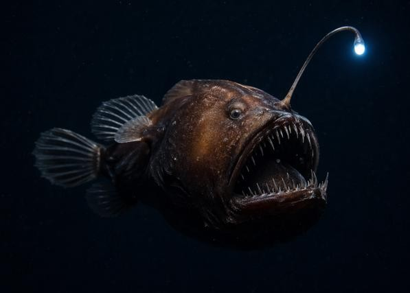
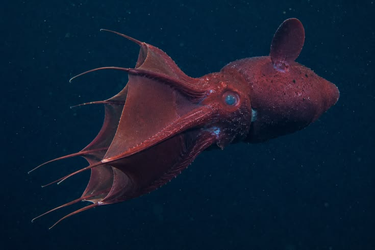
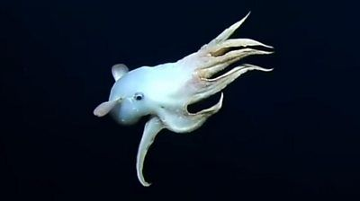
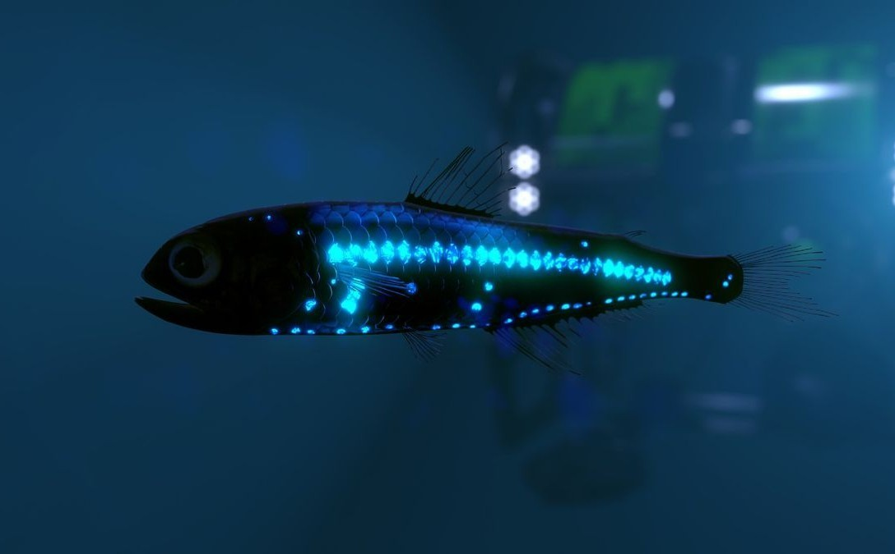
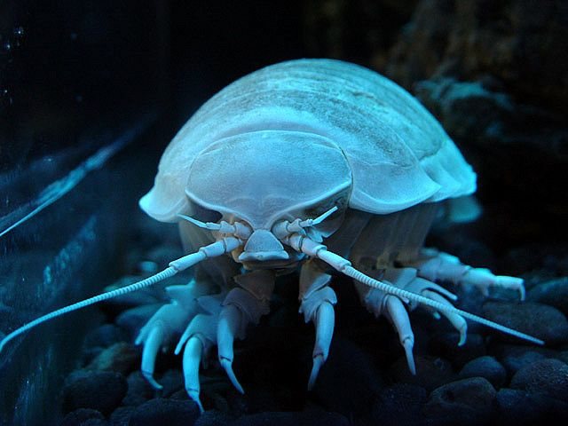
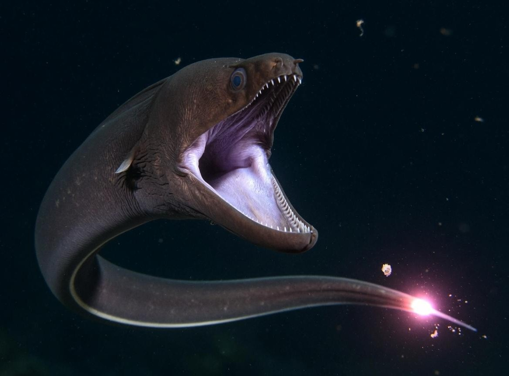
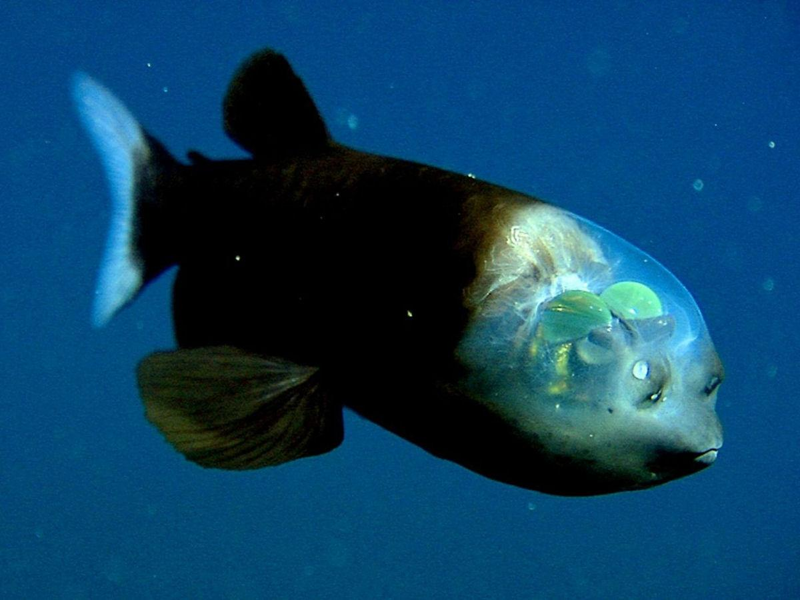
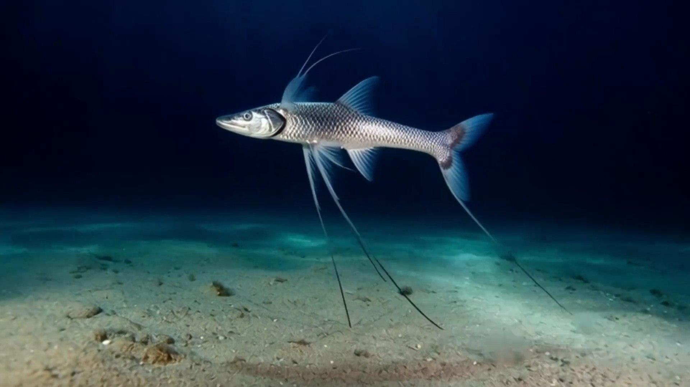

BIOLUMINESCENCE
Anglerfish
A deep-sea fish known for its glowing lure, which helps attract prey.
Learn More →MEET THE DEEP SEA
Discover extraordinary animals that survive in the mysterious depths of our ocean.

BIOLUMINESCENCE
A deep-sea fish known for its glowing lure, which helps attract prey.
Learn More →
DEEP-SEA SURVIVOR
A unique animal with webbed arms that lives in oxygen-poor deep waters.
Learn More →
UNUSUAL ADAPTATION
A deep-sea octopus with ear-like fins that help it move through the water.
Learn More →
LIGHT PRODUCER
A small fish with light-producing organs along parts of its body.
Learn More →
DEEP-SEA CRUSTACEAN
A large crustacean related to woodlice that lives in deep ocean environments.
Learn More →
SPECIALIZED PREDATOR
A deep-sea fish with an enormous mouth compared with its body.
Learn More →
UNIQUE VISION
A remarkable fish known for its transparent head and upward-facing eyes.
Learn More →
SEAFLOOR ADAPTATION
A deep-sea fish that uses elongated fins to support itself above the seafloor.
Learn More →